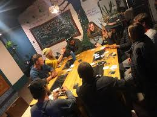

Many friend groups struggle against a common enemy: scheduling. Our founders dealt with all
the same struggles in collaboration between study groups, scheduling game nights, and even
finding time to spend with the in-laws.
That's why we came up with the idea of Finding Time. to make that process far less painful
for our users.
We offer a unique perspective on comparing calendars with many options for anonymity which may
decrease unneccesary animosity between members. Using our software will grant flexibility and consistency to friend groups
all over the world.

But what makes us different from other companies?
Our unique approach to scheduling is founded on the pricipal that human interaction is
necessary to your well-being. Each memeber of our team believes in our "people first" mentality.
With us you can garauntee that you are valued and that your scheduling needs will be met.